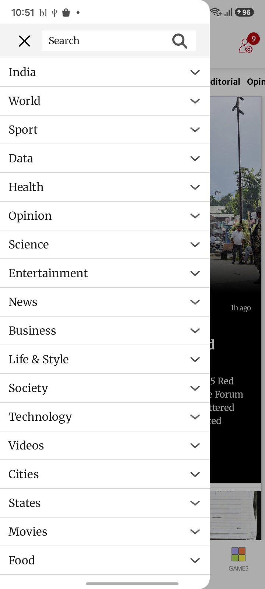
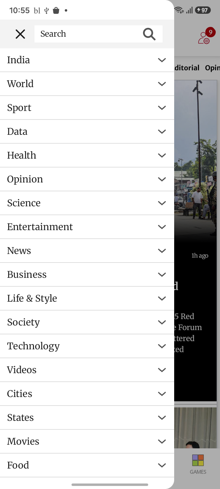
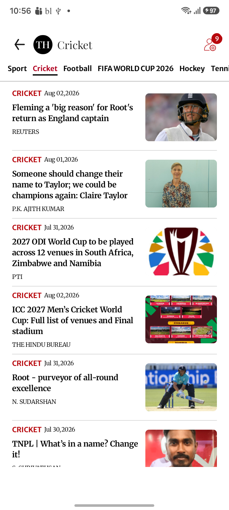
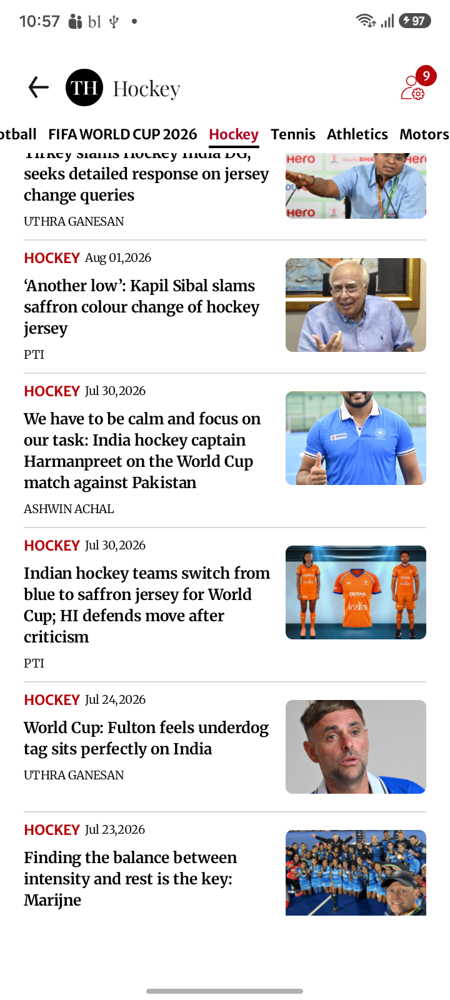
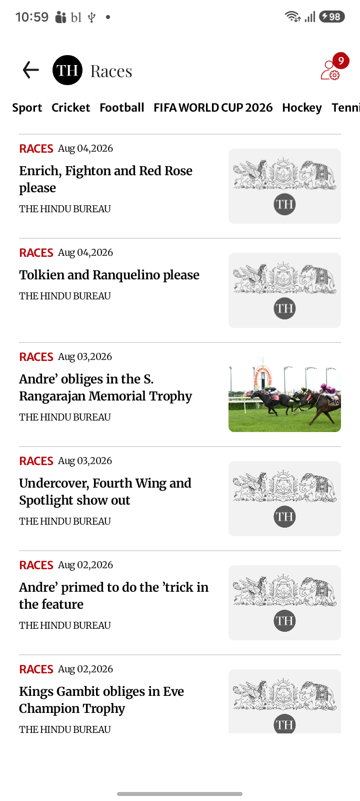
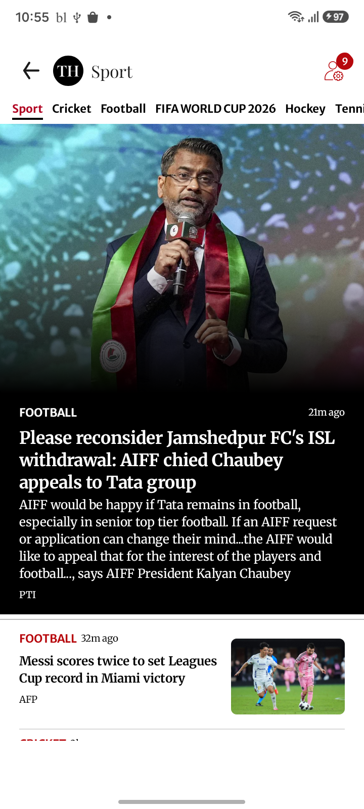
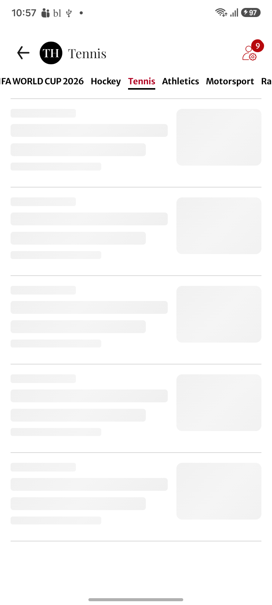

| Scenario ID | Module | Scenario | Status | Duration (sec) | AI Total | AI PASS | AI FAIL |
|---|---|---|---|---|---|---|---|
| SC_29_INDIA | Hamburger Menu | Hamburger categories - India | PASS | 109.65 | 3 | 2 | 1 |
| SC_29_WORLD | Hamburger Menu | Hamburger categories - World | FAIL | 91.59 | 1 | 1 | 0 |
| SC_29_SPORT | Hamburger Menu | Hamburger categories - Sport | PASS | 344.05 | 10 | 6 | 4 |

Image: SC_29_INDIA_hamburger_menu.png
Confidence: High Severity: LOW
Reason: All UI elements are present and aligned. No blank regions, missing components, or rendering issues are visible in the navigation drawer.
Image: SC_29_INDIA_india_india.png
Confidence: High Severity: HIGH
Reason: Screen is stuck in loading state; only placeholders visible, no real content rendered.
Issues:
Jira Title: Content does not load, only placeholders visible
Jira Description: The India news section is stuck displaying loading skeleton placeholders. Expected content (news articles) is missing, indicating a rendering or data loading issue.
Image: SC_29_INDIA_india_news.png
Confidence: High Severity: LOW
Reason: All expected UI components, navigation, and content cards are fully rendered without visual defects.
Image: SC_29_WORLD_hamburger_menu.png
Confidence: High Severity: LOW
Reason: All expected UI components are present. Layout is correctly rendered for the navigation drawer. No visible UI defects.

Image: SC_29_SPORT_hamburger_menu.png
Confidence: High Severity: HIGH
Reason: Side navigation drawer does not cover the full height and width of the screen, leaving visible underlying app content.
Issues:
Jira Title: Navigation drawer does not fully cover screen
Jira Description: The side navigation drawer only partially covers the screen, leaving the underlying home screen visible on the right edge and at the bottom. This is a critical UI defect as the navigation drawer should obscure the content below for focus and clarity.
Image: SC_29_SPORT_sport_athletics.png
Confidence: High Severity: HIGH
Reason: Placeholder content is displayed throughout indicating the actual UI content failed to load or render.
Issues:
Jira Title: Placeholder content visible instead of article list
Jira Description: The Athletics screen displays only placeholder skeletons for article text and images. Actual articles are missing, and the UI appears to be in a perpetual loading state or failed to render content.

Image: SC_29_SPORT_sport_cricket.png
Confidence: High Severity: LOW
Reason: All expected UI components are present and rendered correctly. Layout is properly aligned. No visible rendering or layout issues.
Image: SC_29_SPORT_sport_football.png
Confidence: High Severity: LOW
Reason: All expected UI components are present and rendered correctly. Layout, alignment, and content regions are complete without overlap, cropping, or missing elements.

Image: SC_29_SPORT_sport_hockey.png
Confidence: High Severity: LOW
Reason: All expected UI components are visible and properly rendered. No issues detected.
Image: SC_29_SPORT_sport_motorsport.png
Confidence: High Severity: LOW
Reason: All expected UI components are present and properly aligned. No evidence of rendering issues, missing elements, or layout problems.
Image: SC_29_SPORT_sport_other_sports.png
Confidence: High Severity: HIGH
Reason: Screen displays placeholder skeletons, indicating article and image data failed to load or render.
Issues:
Jira Title: Content not rendered, placeholder skeletons displayed
Jira Description: The Other Sports section displays only loading placeholders (skeletons), indicating that the expected article and image content did not render. This likely represents a defect in either data loading or rendering.

Image: SC_29_SPORT_sport_races.png
Confidence: High Severity: LOW
Reason: All UI components are rendered correctly with no visible defects or interruptions in content.

Image: SC_29_SPORT_sport_sport.png
Confidence: High Severity: LOW
Reason: All UI components are present and rendered correctly. No evidence of layout issues or rendering defects.

Image: SC_29_SPORT_sport_tennis.png
Confidence: High Severity: HIGH
Reason: Content placeholders are visible, indicating that the actual article cards or content failed to load/render.
Issues:
Jira Title: Tennis tab displays only placeholders, actual content missing
Jira Description: On the Tennis tab, only placeholder cards are visible. The actual article cards and images failed to render, indicating an incomplete content load or rendering defect.